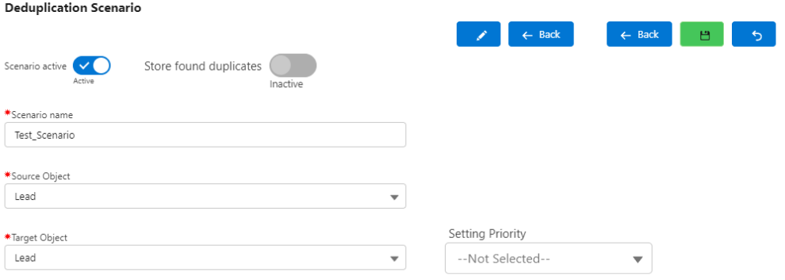
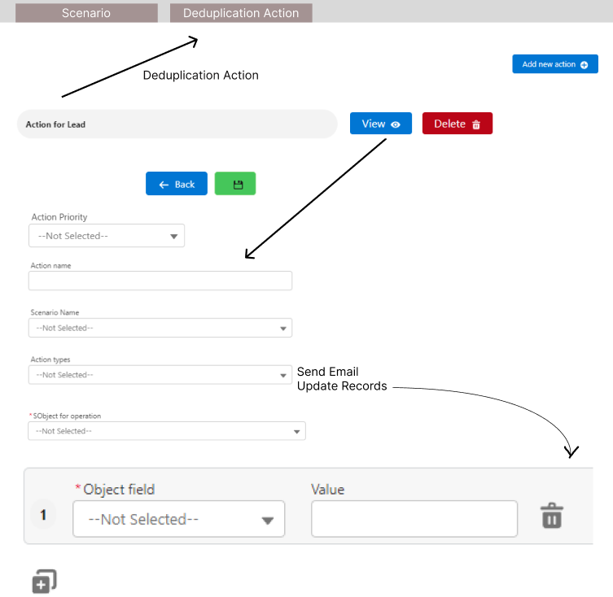
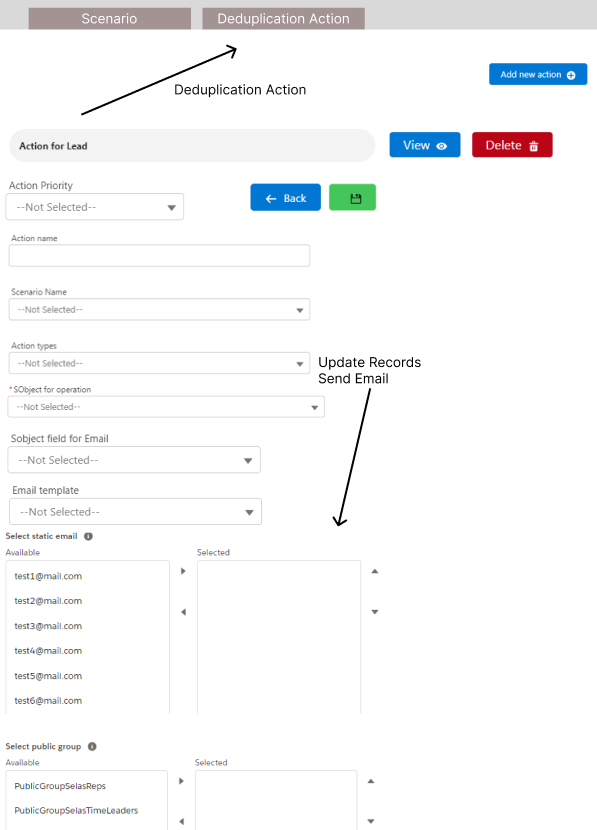
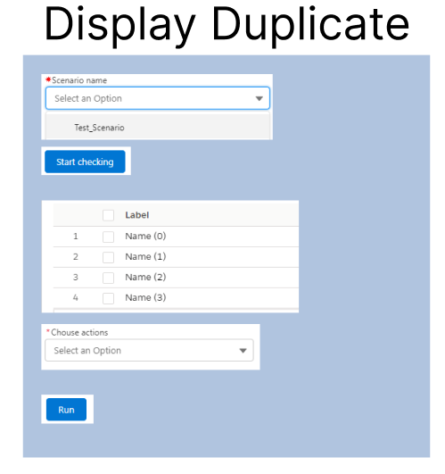

DEDUPLICATION PACKAGE
Created by
Vladimir Gedeiko

Today i will present info
- About app;
- Diagrams;
- Appearance screenshots (examples);
- Requirements for the application;
- Competitors in the market;
- Estimation (approximate);
About app
About app
About app
The deduplication package is a manage package that gives you the ability to find duplicates in a Salesforce organization.
Deduplication package allows you to customize your deduplication scenario, filter the results of deduplication.
The package has 2 custom actions and that can be triggered if there are duplicates in the organization.
Has the ability to upload and download deduplication scenario.
Displays duplicates on lightning page.
Differentiation into 2 types of users:
- - A normal user with the ability to only view the Deduplication scenario;
- - User with full access to deduplication;
Types of deduplication actions.
Types of deduplication actions:
- Send Email;
- Update Records;
Diagrams
Diagrams
For an illustrative example, now let's look at various diagrams:
- Search duplicates Acync;
- Search duplicates Sync;
- Search duplicates remote Server logic;
- User-flow;
- Use-case;
- Development-Process;
- Object schema;
- Object schema;
- Development-Process;
- Use-case;
- User-flow;
- Search duplicates Acync;
- Search duplicates Sync;
- Search duplicates remote Server Logic(implementation MVP-2);
Object schema
Development-Process
Desk trello

Discord channel gitlab-ci/cd
User-flow
Use-case
Search duplicates Async
Search duplicates Sync
Search duplicates Server Logic
Appearance screenshots (examples).
Appearance screenshots (examples).
Page with all scenarios.
Scenario settings page for selecting objects.

Setting conditions

Setting Filter Result

Actions page (Action Update Records)

Actions page (Action Send Email)


Appearance App
examplesRequirements for the application.
Requirements for the application.
Requirements for implementation:
- Search for duplicates by criteria;
- The possibility of adding a new search criterion (not only Equal or Not Equal);
- The possibility of searching between different objects;
- The possibility of starting both synchronously and asynchronously;
- Opportunities to do actions with found duplicates;
- All criteria of fields, filters should be pulled dynamically (without any hardcode of fields or IDS);
- Detection of 2 types of users: - An ordinary user has the opportunity to only view the settings - user full access to deduplication
- Provide for the possibility of storing settings (criteria) and transferring them between versions of the package;
- The development should be carried out package;
- A single page showing information on the package.Namely, the number of duplicates found on objects, etc. (MVP-2);
- A general logistics system is provided(MVP-2);
WHAT CAN BE DONE IN MPV-2
WHAT CAN BE DONE IN MPV-2
What can be done in MPV-2.
- Adding a new search criterion(Fuzzy name, Fuzzy Phone and so on)
- Additional actions(Send Bell Notification, Create Related Record, and so on)
- Improvements UI and Stability package
- Node.js/Java server - will collect all the records in the batch and send them to the service, where they will be processed and the result will be sent with duplicates;
- Node.js/Java - General logging system of errors;
- Heroku or other - will host the server;
How call manage package(Api)
Logger for logging Errors in process development
How to add new action(MVP-2)
- There is a custom meta type with mapping action name class.
- In the Deduplication Action Item, create action fields.
- Add action name to Deduplication Action object Action types: picklist.
- If it is selected, then it will be taken with a custom metatype type by the name of the action class and the logic will be run on it.
- Using the LWC extension, you can add your own tabs / pages to Application or dynamically render UI with json (MVP-2).
Competitors on Appexchange.
Competitors on Appexchange Pros and Cons.
Pros:
- Free up to 5000 records;
- Support multiple languages in UI;
Cons:
- Has limits on the number of processed records;
- Has limits in 250.000 duplicates;(200.000 records-$4230 )
- Not a lot of action only merge;
- No ability to export and import Deduplication scenario;
Competitors on Appexchange Pros and Cons.
Pros:
- Totally free during the beta period;
- Find duplicates and generate duplicates reports;
- Scheduling;
- Support multiple languages in UI;
Cons:
- Not free all time;
- Not action update records;
- No ability to export and import Deduplication scenario;
Competitors on Appexchange Pros and Cons.
Pros:
- AUTOMATE ON A SCHEDULE;
- DELETE UNNECESSARY, STALE RECORDS;
- DEDUPE IMPORT FILES (Mass import data and scan for duplicates, create new records, and update ones that already live in Salesforce);
- CONNECT SYSTEMS VIA API (Shuttle data from your ERP through Cloudingo to Salesforce to leverage master data management systems);
Cons:
- Not free;
- No ability to export and import Deduplication scenario;
- Not such actions like sendEmail;
Each of these packages has its own advantages and disadvantages:
- Duplicate Check - for Salesforce it offers a search using the algorithms of Levenstein and Jaro-Winkler, well suited for users who need ease of use.
- No Duplicates - provides the configuration of the threshold of convergence, support for many data formats, as well as checking for duplicates in mass processing mode. But expensive and difficult to set up.
- Cloudingo - allows you to remove duplicates as they are, configure the rules using a graphic interface and conveniently integrate with Salesforce. However, Cloudingo also has a complex interface, low speed and huge prices.
- My custom package - easy to use, ability to import scripts, support for all objects, flexible search conditions, cheap (free). However, has low speed and restrictions in symbols.
Finally, Estimation (approximate):
Estimation if we do all requirements with code review and test:
- Create Model Data (Objects, Fields, RecordTypes, Permissions, Tabs, Application, and so on) - 3-4 days;
- Creation of LWC components for the rendering of UI and validation filters - 43 days;
- Creating logic search for deduplicate on Apex - 33 days;
- Create logic for all actions - 5 days;
- Create logic for transferring duplication settings between versions of the package - 5 days;